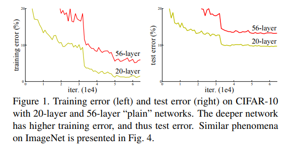
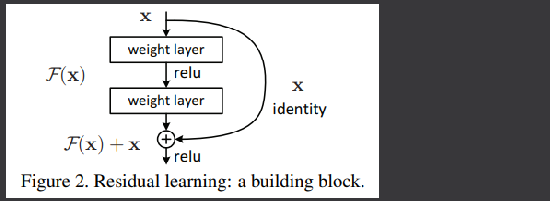
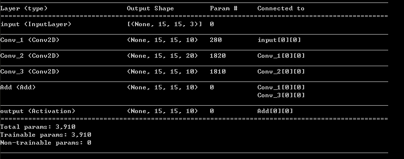
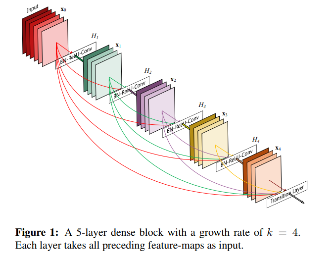
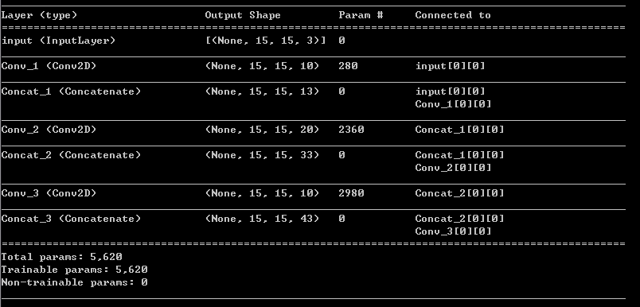

目錄
Residual & Dense
Residual
Residual 為 ResNet 中提出的一種架構，中文譯為殘差，其提出的主因是為了解決網路堆疊太深而產生的退化問題，沒錯，網路不是愈深愈好，退化並非 overfitting ，而是誤差確實的提高，這在 ResNet 的論文中有詳細的說明，其實驗證明若只是單純的堆疊網路並不會都是帶來正向的結果。

為了解決這種情形，殘差的概念被提出，殘差的想法為 ── 本來神經網路學習的過程可以看成找尋一個適當的函式來滿足你的輸入及輸出，假設輸入為 x ，想要學習的函數為 H(x) ，那我們今天修改下學習的目標，從 H(x) 改成 H(x)-x ，並假設新的目標函式為 F(x) ，那麼我們可以列出式子 : F(x)=H(x)-x ，移項後就變成 F(x)+x=H(x) ，也就是我們可以利用訓練 F(x)+x 可以跟原本的 H(x) 視為等價。

那麼為甚麼這麼做可以解決網路太深的退化問題呢？若依照論文的解釋，它們認為要找出 F(x) 的最優解會比 H(x) 來得容易，因為 F(x) 是針對誤差的誤差 (感覺好繞) 進行最佳化，所以對於變化更加的敏感，而且就算訓練不好，因為還有本來的 x ，所以不會太影響本來的結果；
若上述你已可以理解，那麼非常好，不過這邊還有我依照自己理解的白話解釋，我從特徵角度著手，隨著網路逐層加深，或許有些有用的，但是權重不怎麼高的特徵會被磨滅、被覆蓋等情形發生，表現在結果上便是誤差的提高，也就是退化的真相，殘差架構將前面找出的特徵整組加入目前所計算的特徵上，這意味著不需要擔心這層訓練走歪太多，再不濟還有前一層的結果作為一個基準，以上是我對殘差架構的一點說明及理解，若還是不太清楚，那麼開始動手實做看看，或許你可以找出你自己的理解方式，接下來將會說明該如何實做一個簡單的殘差區塊。
import tensorflow as tf |

建構起來非常的簡單，範例中 model_input 經過一層 conv1 後進入 Residual block，因為我們需要將 conv1 的結果向後傳遞與 Residual block 的輸出相加，所以在 block 的輸出層時 (範例中的 conv3 )，要注意將維度調整為與 conv1 相同，否則無法正確相加。
相加的方法為使用 keras.layers 中的 Add 類別
tf.keras.layers.Add(**kwargs) |
詳細的說明可以參照 Keras 手冊
Dense
Dense 方法則是可以在 DenseNet 中看到，其想法與殘差類似，但是不像殘差使用相加的操作，Dense 方法中採用了 concatenate 的方式，並且操作的不只單單前一層，而是前面的所有層，這大大的增強了所有可能的特徵，並且因其採用 concatenate 的方式，所以特徵能夠完全的保留並參予計算。

雖然看起來很複雜，但是其實非常好理解，與殘差的想法相同，為了不讓網路在計算時失去有用的特徵，所以將先前找到的特徵加入以防消失，只不過 Dense 方法做得更絕而已，它乾脆一股腦兒的把之前計算的通通併在一塊兒，連同這層的輸出一併餵入下一層。
已經有了殘差的概念，理解 Dense 應該不會太困難，接下來就直接進行實做，在範例中，只會實做滿足 Dense 概念的小區塊，若需要看它實際的應用成果，建議查看 DenseNet ，論文中除了 Dense 架構外，還有著很多特別有趣的操作。
import tensorflow as tf |

可以看到範例中每個餵入下層卷積的輸入都是由前面層所合併的，但是別看深度愈來愈多，好像會很花計算資源，但其實以生成特徵的花費來看，同樣一個 256 維的特徵，一個是直接計算出 256 維，一個是由前面 4 層的 64 維組裝起來，差異就出來了，使用這種方法，反而可以減少產生特徵的花費，並可以保留前面的特徵，防止其退化，這種操作還是很巧妙的。
至此，我們已經說明了序列模型的建構以及兩種架構技巧，對於很多應用來說，這些已經足夠應付，不過該如何變化，還是需要自行去好好研究，甚至模型架構也只是深度學習的一環而已，還有很重要的訓練資料及損失函數等等部分都是進行一個深度學習專案需要考慮的事情，深度學習的坑是很深的，並不是單純的把資料丟進去讓它慢慢跑就好，所以，學無止盡，既然踏入了深度學習這個巨坑，只能持續的接受更多的知識了。